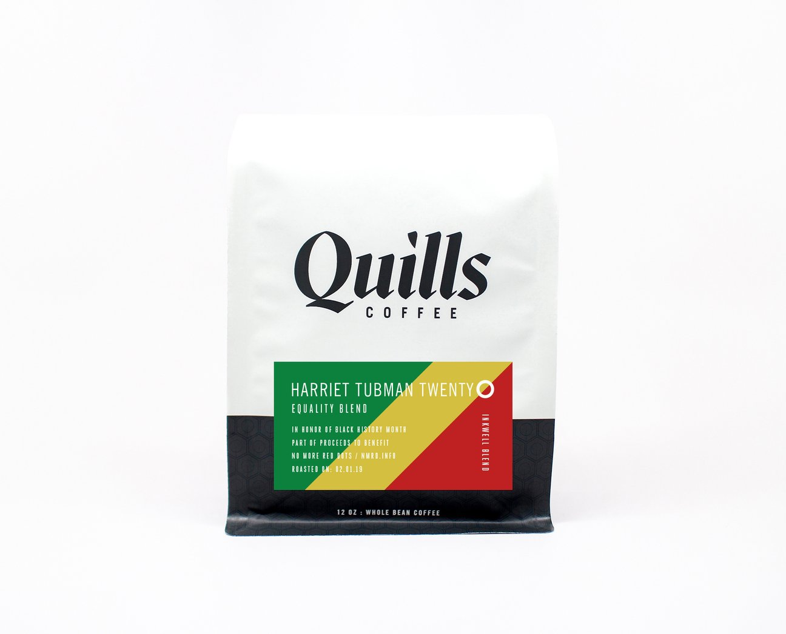

OUR STORY
Quills’ story began where yours began, with a love for coffee and the creative community spaces it naturally creates.
Owner Nathan Quillo’s love for coffee started where it begins for most of us - as a customer, coffee drinker and enthusiast. He later became a barista himself, taking his passion for guiding others on their coffee journeys one step further. Later, during his time in social work, Quillo began regularly meeting with students in local coffee houses, and soon found himself explaining the finer points of premium coffee roasting and brewing.
With this blooming passion, a vision for Quills was born - to create a space where the community of coffee lovers in Louisville could fuel their passion and find community. Nathan’s brother Gabe soon joined in with hammer in hand, and after doing the bulk of their own remodeling, the two brothers opened up the original Quills in 2007, in Louisville's Germantown neighborhood. They moved the shop to the neighboring Highlands in 2009, and the dream began to take off.
It soon became clear, to no surprise of theirs, that the brothers were not alone in their enthusiasm. With coffee enthusiasts like you quickly joining us for the journey, Quills has grown from one small neighborhood shop to a regional and even national presence with shops in Louisville, New Albany and Indianapolis, and an ever-growing list wholesale customers brewing and serving our coffee around the country. Our vision for connecting with others who share our passion now even extends to fostering deep connections around the globe with the coffee producers that grow our coffee, so we can source and select the coffees you are most excited to get your hands on.
At the end of the day, Quills can be many things to many people. It can be a very good cup of coffee, or the catalyst for innovative ideas. The magic of a coffee shop is that once that environment is created, it becomes not just what the staff makes it, but what the customers make it. A true community happens. Quills creates this with three simple staples: great coffee, great service and great spaces. We believe there is something for everyone at Quills. Quality for All.

FEATURED BLEND
A portion of the sales go to No More Red Dots, an organization helping to combat youth violence in Louisville.
